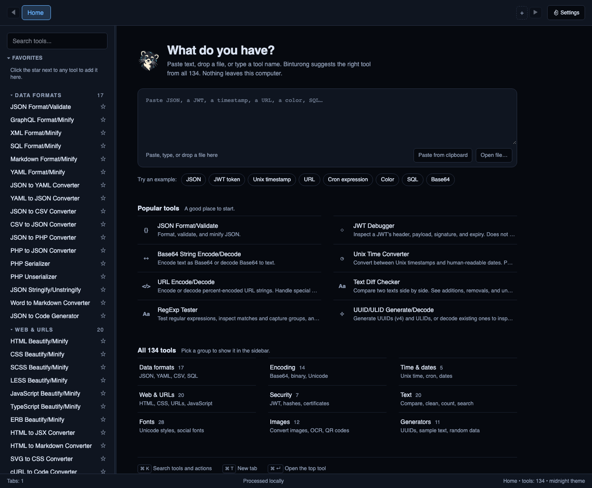

Binturong developer tools
Free · MIT · DesktopEveryday developer tools, together on your desktop. Format code, convert data, and reuse a sequence of tools. Tool processing happens on your computer.
Download for macOS, Windows, Linux · Installation and build warnings
See the workflow
Format a synthetic JSON object, convert it to YAML, and save the pipeline.
Download Binturong
Get the latest release for macOS, Windows, or Linux
Binturong is free and open source under the MIT License. The current release is v0.1.2.
- macOS, Apple Silicon and Intel: choose Binturong_0.1.2_macos-universal.zip. Extract it, open the included DMG, drag the app to Applications, and eject the DMG. A separate universal DMG is also available.
- Windows x64: choose Binturong_0.1.2_x64-setup.exe. An MSI is available for users who prefer it.
- Linux x86_64: choose the .deb for Debian/Ubuntu, .rpm for Fedora, or .AppImage. Make AppImage executable before running it; it may require FUSE 2 compatibility support. Linux packages are built on Ubuntu 22.04; check your distribution's requirements.
Read the installation instructions and current build warnings
Mac builds are ad-hoc signed and unnotarized, so macOS may block first launch. Windows installers have no publisher signature and may show an unknown-publisher warning. The installation guide explains the current Mac quarantine workaround. Package-manager distribution does not replace publisher signing.
Homebrew is available: brew install --cask alsatianco/tap/binturong
Winget, Snap, and Flatpak files are currently unpublished templates. Updates are installed manually from a newer release or through Homebrew.
Try one useful workflow
Try this synthetic JSON input: {"service":"orders","environment":"local","retries":3}
Read the pipeline instructions
- Open JSON Format/Validate and format an API response or configuration object.
- Press Cmd/Ctrl+K, choose actions, and open Pipeline Builder.
- Add JSON Format/Validate followed by JSON to YAML Converter.
- Run the pipeline, inspect each output, and save the chain for reuse.
The demo uses synthetic order-service data. Saved chains retain their input. Pipeline formatter steps currently use Format with two-space indentation; per-step decoding direction and configuration controls are not available.
Everyday tools in one workspace
- Format JSON, YAML, SQL, HTML, CSS, JavaScript, and other code.
- Convert JSON, YAML, CSV, encoded text, dates, and common data formats.
- Decode JWT headers and payloads. JWT decoding does not verify a signature.
- Work with text, hashes, images, and OCR. OCR requires Tesseract.
- Find tools with search and the command palette; keep tabs, favorites, and recent tools.
- Reuse compatible pipelines, and batch-process tools that expose Batch controls.
- Run shared formatter and converter operations with the bundled CLI using stdin or files.
Browse tool examples, settings, and CLI commands
The v0.1.2 registry contains 134 tools. The registry and binturong-cli list own the inventory; individual interfaces and input formats still determine which operations are available.
Privacy and data retention
Tool processing happens locally. The current app has no analytics or telemetry integration and no automatic update checks. Installing Tesseract and downloading OCR languages require network access. External project and download links open in your browser.
The app stores settings, favorites, recents, presets, saved chains, and tool history in a local SQLite database. Tool history can retain up to 20 input/output pairs per tool, with no timed expiry. Remember last input does not disable history. Clear tool history or Clear all history removes recorded runs; deleting a saved chain removes its saved input.
Detection analyzes text you enter. The current UI does not continuously monitor your clipboard or keep clipboard history. Copying output places it on the system clipboard.
Find the database location in Settings → Diagnostics. The SQLite database is not encrypted by the app. Clearing records does not promise forensic erasure from storage or backups.
Contribute or report a problem
Include the app version, operating system, steps, synthetic input, and expected result. Binturong is built with Tauri, Rust, React, and TypeScript. Contributions that improve real workflows and installation are welcome.
If Binturong saves you time, a GitHub star helps other developers discover it.